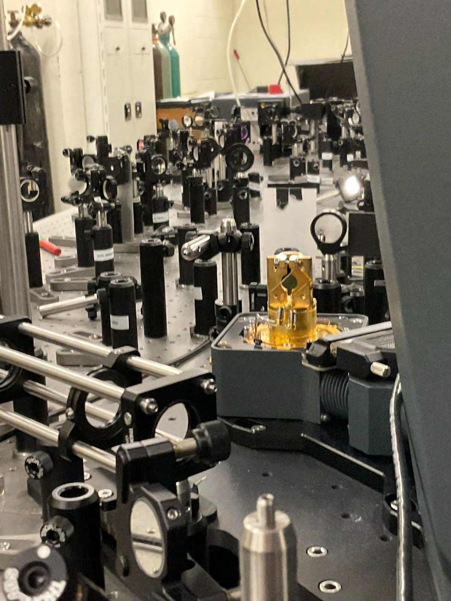
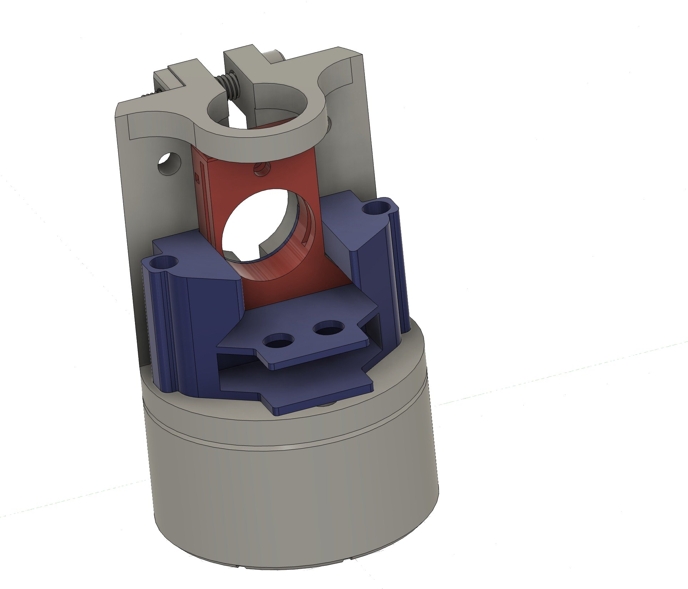
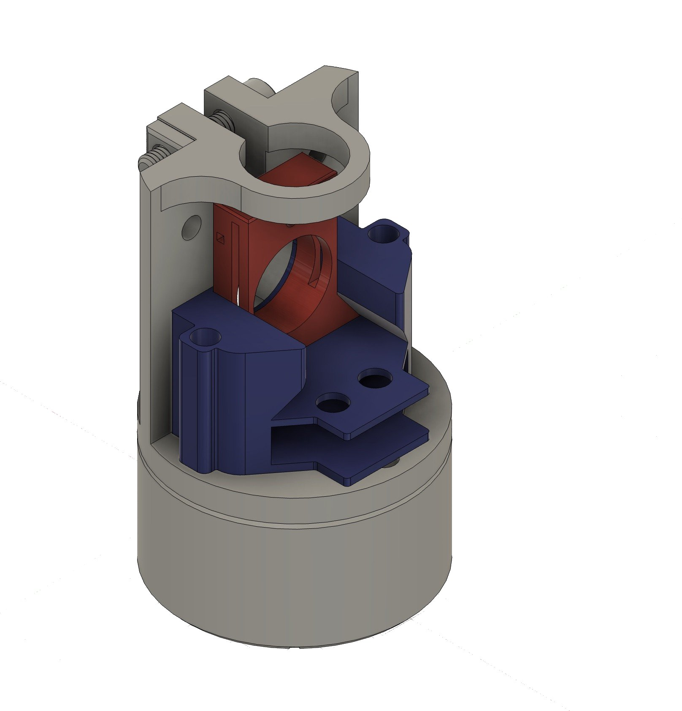
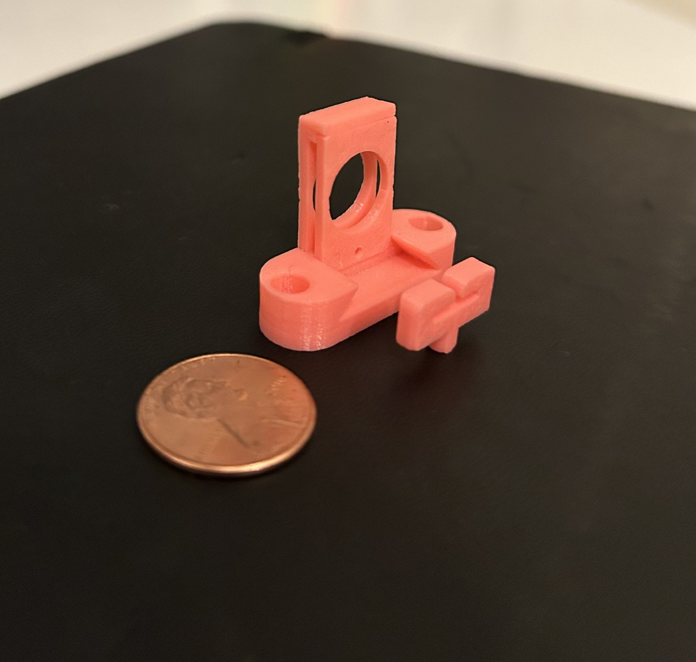
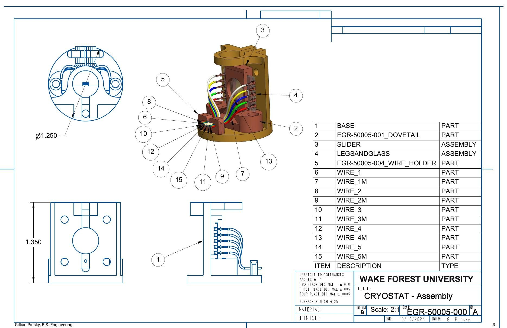

The problem
Optical measurements in a cryostat need the sample to stay exactly in the beam while it cools. The old setup drifted, so the spectra were noisy.


The design
A 15-part copper assembly with a dovetail base, slider and wire holder that keeps the beam path clear and conducts heat well. I modeled it in Fusion 360 and Creo and checked fit with 3D prints.


Making it
I machined it in copper on a Tormach PCNC 440 with a Wazer waterjet. When the base hit the cryostat casing, I widened one mounting hole on the drill press to restore clearance.

Results
Noise dropped about 79% at 20 K and 31% at 300 K, and peaks shifted less than 5 nm, so the holder doesn't distort the measurement.






